神奈川県南足柄市にある道了尊・大雄山最乗寺は、JR東日本から伊豆箱根鉄道、さらに伊豆箱根バスへと乗り継いで、ようやくたどり着く山深い古刹です。境内には入口から奥の院まで500段以上の石段が続いており、登りには40分ほどかかりました。巨木と灯篭に包まれた長い参道の先、クライマックスには真っすぐ216段続く大階段が待っています。
JR東海道本線から伊豆箱根鉄道大雄山線に乗り換え、大雄山駅から伊豆箱根バスに乗車。「道了尊」バス停で下車すると、階段の入口はすぐそこです。入口から奥の院まではおよそ徒歩40分。
500段以上、登り40分ほどかかる長丁場のため、歩きやすい靴と水分補給の準備をおすすめします。木々に囲まれた山道が続くため、雨天時は足元に十分ご注意ください。
バスを降りると、まず高い木々に圧倒されます。階段の入口はバス停からすぐの場所にあり、2つの大きな石灯籠に囲まれていました。
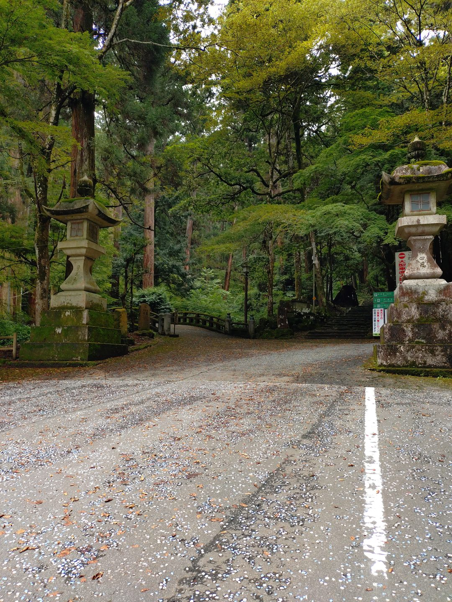
階段の入口の風景です。大木の間に続く石段は奥行きが広く、奥までずっと続いていて、この場所の広大さを物語っていました。
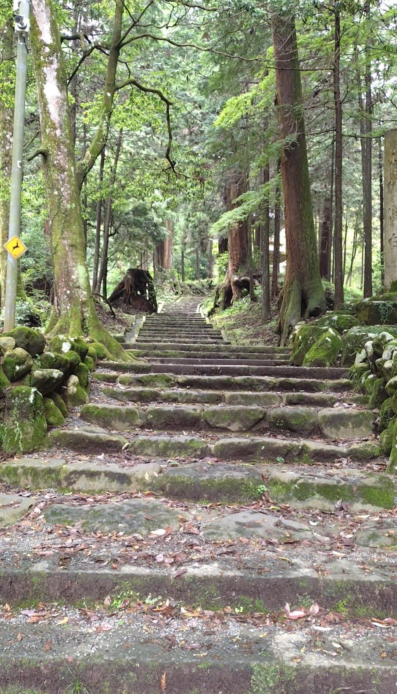
しばらく進みます。朽ちた大木がそこかしこに残っていて、この場所の歴史の長さを感じさせました。
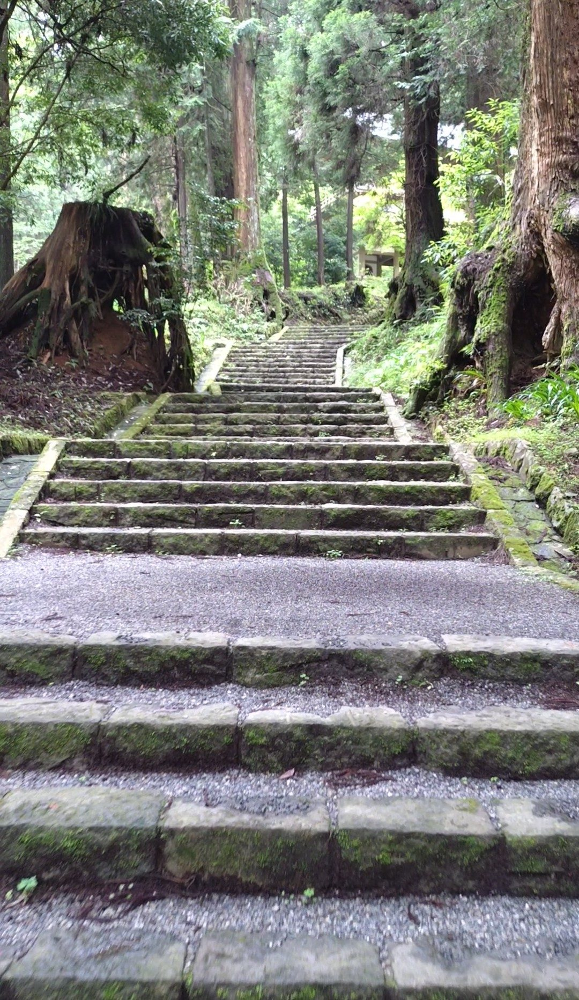
大きな門をくぐり、しばらく進むと、石畳と形の整った石段へと変わっていきます。本堂が近いことを感じさせる変化でした。
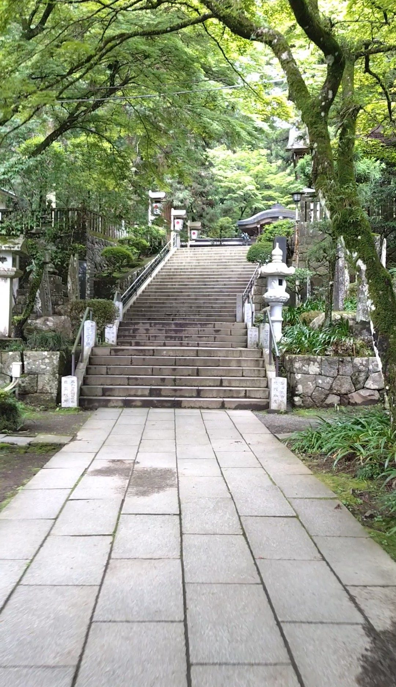
本堂の入口に到着しました。奥の院へ向かう場合は、ここからさらに本堂の方向へ進みます。
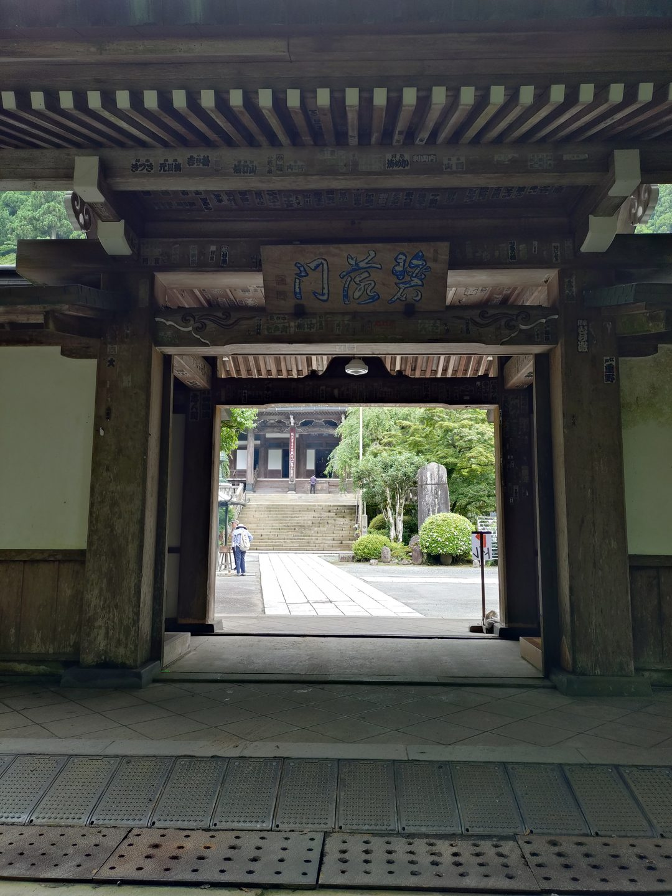
本堂の左手を見ると、石畳が奥へと続いています。ここが奥の院へと向かう道でした。
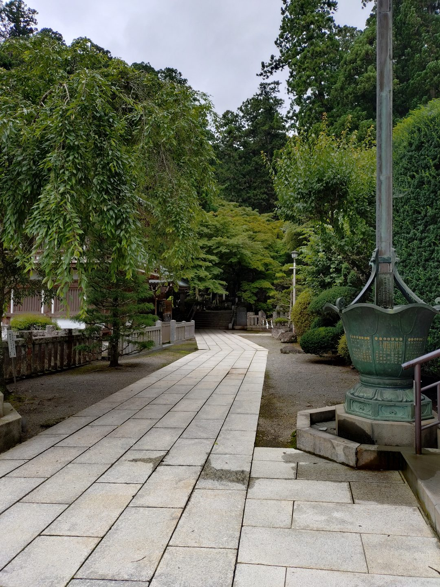
進んだ先には、奥の院への道を示す看板が立っていました。ここからいよいよ本格的な登りが始まります。
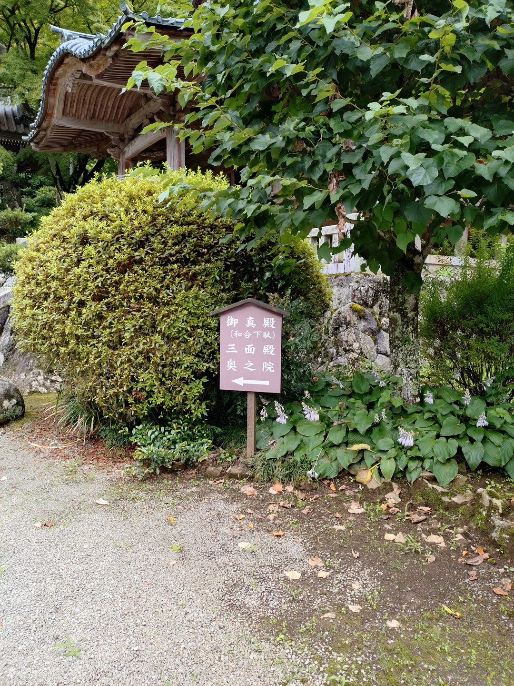
途中、妙覚宝殿へと続く77段の階段が現れます。階段の下から見上げると妙覚宝殿が見え、横幅が広く段数も多いその姿は圧倒的でした。周囲に整列するように並ぶ木々や灯籠も相まって、まさに「ボス感」を漂わせていました。
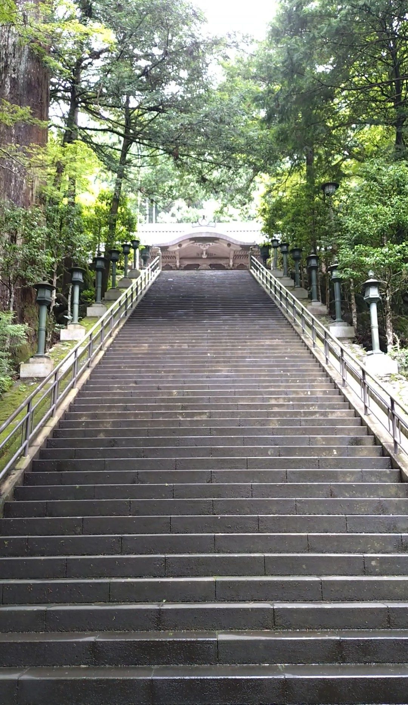
さらに進むと、少しずつ階段の幅が狭くなっていくのを感じます。周囲の自然がぐっと近づいてくる感覚がありました。
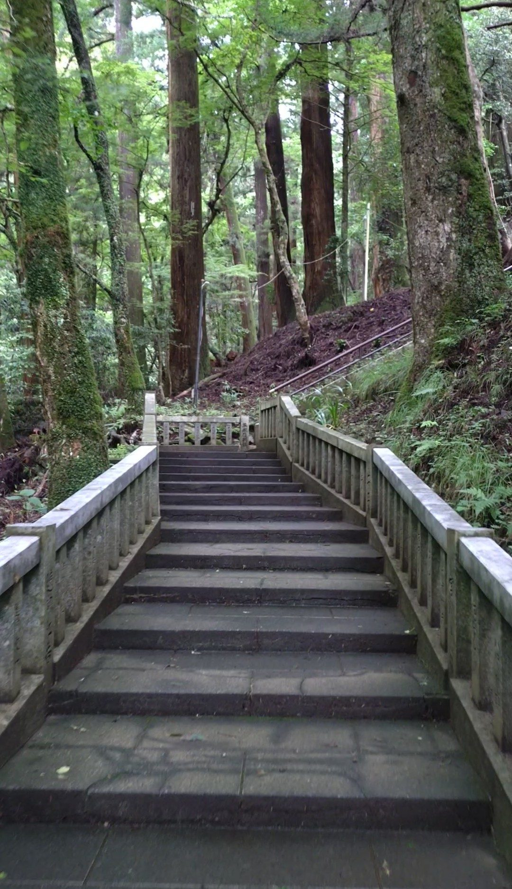
そしてしばらく歩くと、いよいよクライマックス。奥の院へと通じる216段の大階段が見えてきます。真っすぐな直線状の階段なのに、頂上がかすんで見えないほどの長さでした。
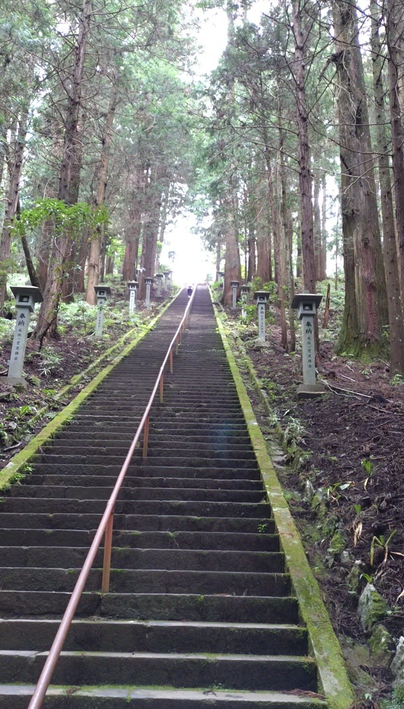
気合を入れて、何とか登り切りました。振り返って階段を見下ろすと、大きな達成感がこみ上げてきます。修行の場所としてふさわしい、そう感じさせる石段でした。
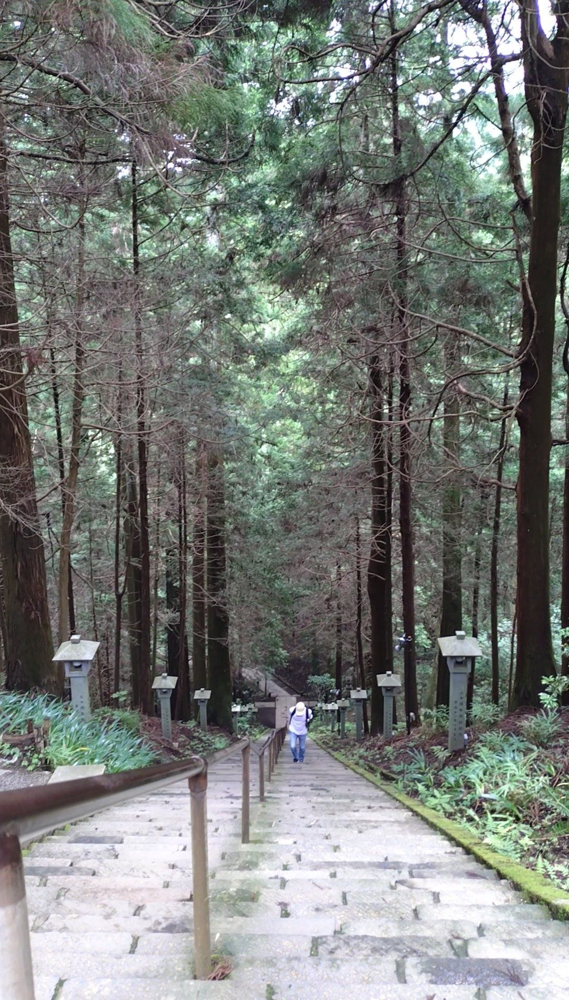